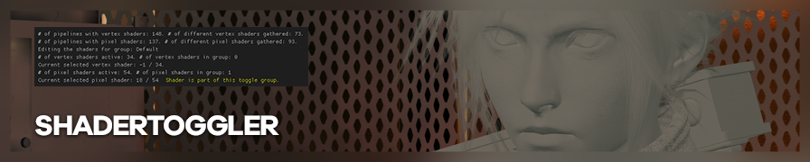
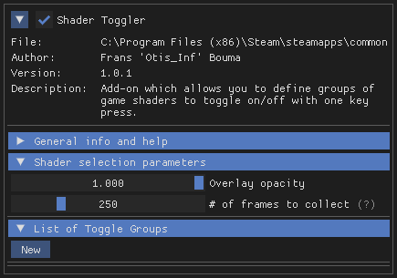
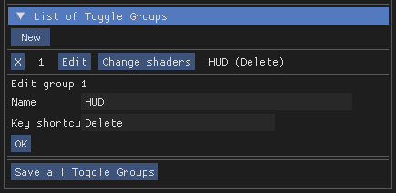

ShaderToggler 是 Otis_Inf 为 ReShade 编写的一款插件。它允许您像 3DMigoto 一样打开或关闭游戏内的着色器。本页是一份简短的使用指南，同时也是社区用户为各类游戏提交的切换组文件库。
ShaderToggler 需要 ReShade 5.1+ 并启用完整插件支持。
{kind=link}
安装
在 releases 页面，有两个相关文件可供下载。
ShaderToggler_v101.zip适用于 64 位游戏，即大多数现代游戏。ShaderToggler_x86_101.zip适用于 32 位游戏，通常是运行在 DX9 上的较老游戏。
下载对应文件并解压。将 ShaderToggler.addon 复制到游戏的 ReShade DLL 所在文件夹，以便 ReShade 加载使用。
启动游戏，打开 ReShade 界面，进入 Add-ons 选项卡。您应该能在已安装插件列表中看到 Shader Toggler。

使用示例：HUD 隐藏
ShaderToggler 可用于隐藏游戏场景中的诸多内容（甚至包括几何体！），但它最常用的功能是移除游戏的 HUD。
在本示例中，我们将使用该插件移除《巫师 3》中的 HUD。
第一步：创建新切换组

首先，点击 List of toggle groups 下方的 New 按钮，这将创建一个带有编号的新条目。点击 Edit 按钮并按需编辑。该组将命名为"HUD"，因为我们要移除 HUD，并将其绑定到 Delete 键——工具中隐藏 HUD 的常用快捷键。
第二步：标记着色器
设置好切换组后，就可以开始标记着色器了。这些着色器将被添加到切换组中，激活后将从场景中隐藏。
点击 Change shaders，等待帧收集过程（应会在左上角显示）完成。
帧收集完成后，使用 Numpad 1 和 Numpad 2 逐一切换可用的像素着色器。HUD 通常由像素着色器渲染。切换时注意哪些着色器会导致 HUD 消失，用 Numpad 3 将其标记。

标记完所有着色器后，点击 Done 注册切换组。操作正确的话，使用快捷键时将一次性隐藏所有已标记的着色器，实现完美的 HUD 隐藏！
保存所有切换组！
否则下次启动时将不得不重新操作一遍！
此操作会在 ADDON 文件所在目录创建一个 ShaderToggler.ini 文件。欢迎将其提交到下方的文件库。
更多玩法！
隐藏 HUD 只是 ShaderToggler 的用途之一。上述流程还可以轻松隐藏更多内容——从各种后期处理效果到完整渲染通道（通过像素着色器切换），甚至可以通过顶点着色器切换来隐藏场景中的角色或植被。
请注意，该插件不拦截计算着色器。因此某些效果（如部分 UE4 景深实现）无法通过 ShaderToggler 移除。
视频示例

文件库
这些文件需要重命名为 ShaderToggler.ini，并放置在 ShaderToggler.addon 所在的同一文件夹中，插件才能正确加载。
| 游戏 | 功能 | 补充说明 |
|---|---|---|
| Abzû | - 切换 HUD 元素（Caps Lock） |
|
| Assassin's Creed: Origins | - 移除头部畸变（Shift + 6）- 色差（ Shift + 7） |
|
| Assassin's Creed: Syndicate | - 游戏内 HUD 切换（Caps Lock）- 开膛手杰克 DLC 色差切换（ Numpad .） |
|
| Assassin's Creed: Valhalla | - HUD（Caps Lock）- 主角、NPC 及动物（ Shift + F4）- 世界中的垂直标记线（ Shift + F5）- 雨效（ Shift + F6） |
|
| Atomic Heart | - 游戏内 HUD 切换（Caps Lock） |
|
| Batman: Arkham Knight | 雨效及雨滴弹射切换（Caps Lock） |
|
| Battlefleet Gothic: Armada | HUD（Caps Lock） |
|
| Battlefleet Gothic: Armada 2 | UUU 未捕获的 HUD（Caps Lock） |
|
| Bayonetta | 暂停菜单 + 游戏内 UI + 特效（Caps Lock） |
|
| Call of Juarez: Gunslinger | - HUD/边框（F2）- 颜色校正（ F3）- 卡通着色切换（ F4） |
|
| Century: Age of Ashes | - HUD（Caps Lock）- 各种效果/拾取图标（ Numpad 1 和 Numpad 2） |
|
| CONTROL | HUD 切换（Caps Lock） |
|
| Cyberpunk 2077 | HUD（及部分广告显示）（Caps Lock） |
|
| Death Stranding: Director's Cut | 画面污迹、HUD、Odradek 探测效果、手性网络边界线、遗失包裹光晕、位置线、目的地引导线及脚印（F3） |
玩家添加的图标出于某些原因无法隐藏 |
| Destroy All Humans! | 完整 HUD 切换（Caps Lock） |
|
| DREDGE | HUD（Caps Lock） |
|
| Dying Light 2 | - 镜头光晕及画面污迹（Caps Lock）- 隐藏通风口和飘浮残骸（但也会误隐藏部分烟雾和火源）（ F2）- 隐藏远处鸟类（ F3）- 隐藏 HUD（ F4）- 仅飘浮残骸（ F5） |
|
| Elden Ring | - 隐藏赐福地点（Caps Lock）- 隐藏雨水、飘落树叶（？）及（剧透）结局灰烬（ F2）- 隐藏金色和灰色雾墙（ F3）- HUD（ K）- 雾效（ Caps Lock）- 泛光（ [）- 直接光照/角色背光（ ]） |
隐藏赐福地点的同时也会隐藏其他光源（如蜡烛和火把），无法避免。 |
| Everspace 2 | 光标切换（F11） |
|
| Evil Dead: The Game | - HUD 切换（Caps Lock）- 雨效切换（ Shift+Ctrl） |
|
| Far Cry 3 | 地图、弹药、任务信息、敌人标记、穿墙敌人轮廓及敌人注意力指示器切换。（Caps Lock） |
|
| Final Fantasy VII Remake | HUD（Del） |
|
| Forspoken | HUD 切换（Caps Lock） |
|
| Ghostwire: Tokyo | HUD 与景深切换（Caps Lock） |
|
| God of War | 雪效切换（Caps Lock） |
|
| Hi-Fi Rush | - HUD 与菜单景深切换（Caps Lock）- 部分打击效果（ Tab）- 允许在角色和物体上绘制图案（ P）- 角色漫画描边（ C） |
建议在拍摄过场动画时使用暂停菜单，否则音频不会停止。 |
| Horizon Zero Dawn | - 雨效（Caps Lock）- 泛光（ Shift + X）- HUD（ Shift + Q） |
- 雨效：未能找到并移除雨滴从地面弹起的效果 - 泛光：包括火源和机械体的泛光 - HUD：包括主界面及物品掉落/战利品弹窗 |
| LEGO Star Wars: The Skywalker Saga | - HUD（K）- 物体描边（可能隐藏部分小型立方体贴图）（ L）- 金币及其阴影（可能隐藏其他阴影）（ ;）- 镜头光晕（ Numpad 7）- 隐藏角色（因角色种类繁多仍在完善中）（ Shift + 2） |
|
| Matrix Awakens | HUD 切换（Caps Lock） |
驾驶时隐藏速度表 |
| Need for Speed Hot Pursuit Remastered | - 驾驶员切换（D） |
游戏将多种着色器（暗角、色调映射、运动模糊、镜头光晕）合并到了单一着色器中，因此不建议将其关闭。 |
| Need for Speed Unbound | - HUD 切换（Caps Lock）- 卡通效果切换（ Numpad *） |
卡通效果切换无法关闭所有效果，但可以关闭大部分。 |
| Prey | HUD 切换（Caps Lock） |
同时切换 Chairloader 菜单窗口。 |
| Sekiro: Shadows Die Twice | HUD (Del) |
|
| Shadow of the Tomb Raider | HUD 切换（Caps Lock） |
|
| Sherlock Holmes: The Devil's Daughter | HUD 与景深切换（Caps Lock） |
|
| Singularity | - HUD 切换（Caps Lock）- 雨效切换（ Ctrl+1） |
|
| Somerville | - 隐藏菜单与黑边（启用自由相机时）（Caps Lock）- 隐藏菜单文字（ ALT+0） |
要让游戏在黑边区域正常渲染，需要使用 Cinematic Unity Explorer 自由镜头。 |
| Space Hulk: Deathwing | HUD + 队伍标记（Caps Lock） |
|
| Spider-Man Remastered | 完整 HUD 切换（Delete） |
|
| Star Wars Jedi: Survivor | - HUD、原力描边、其他干扰元素（Caps Lock） |
|
| Submerged: Hidden Depths | 雨效及雨滴（Caps Lock） |
|
| The Quarry | 仅切换顶部发光的着色器柱体和精灵图，鼠标图标由 UUU HUD 切换处理。（F1） |
记得重新开启，否则容易错过关键道具。 |
| V Rising | HUD（Del） |
|
| The Vanishing of Ethan Carter Redux | - 隐藏蓝色雾气（Y）- 隐藏悬浮文字（ X）- 隐藏雾效（ V）- 隐藏主菜单（ Del） |
|
| Yakuza 0 | HUD（Del） |
在自由漫游时关闭 HUD 元素，不含小游戏部分。 |
| Yakuza Kiwami | HUD（Del） |
在自由漫游时关闭 HUD 元素，不含小游戏部分。 |